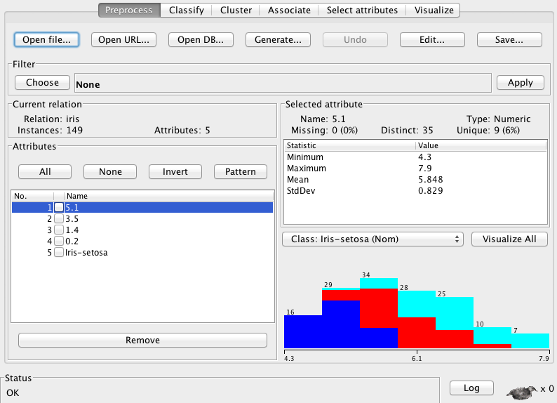
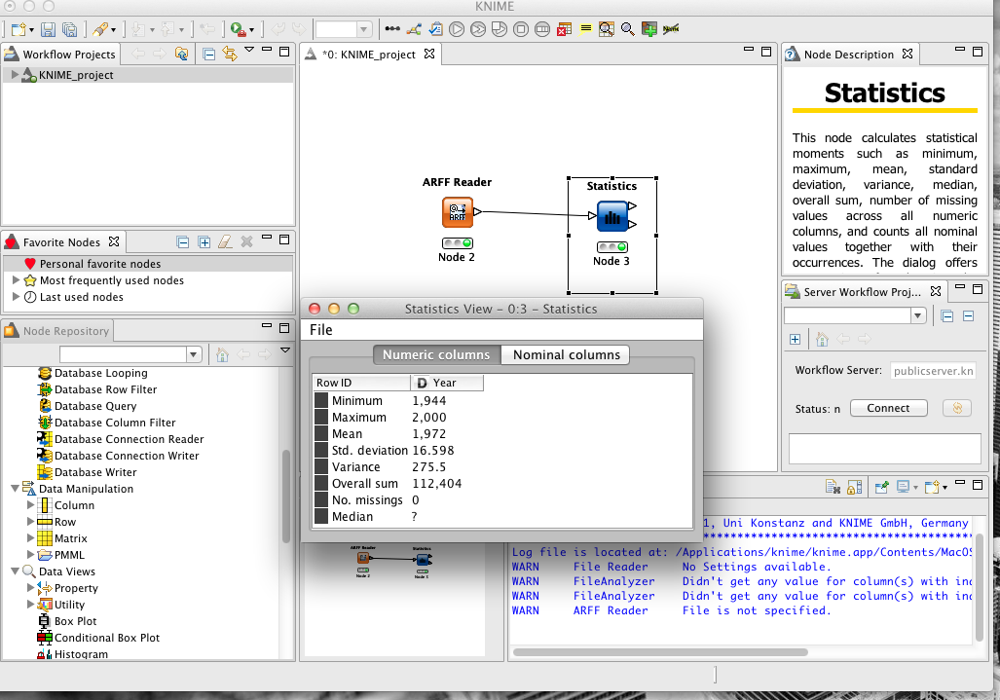
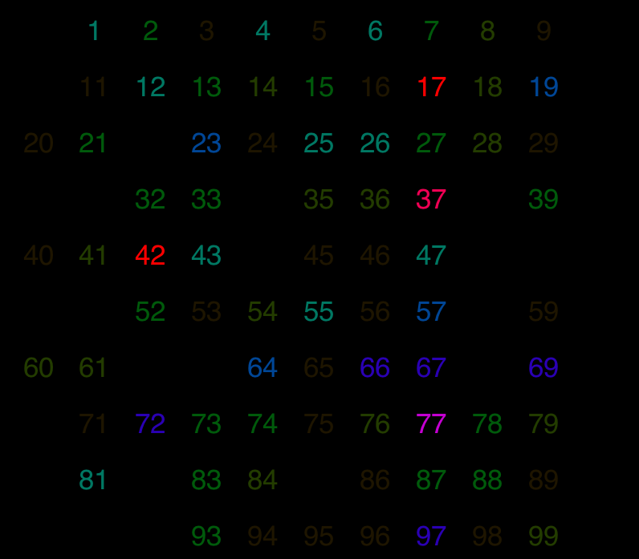

Data Mining Portfolio
Data Sets
When observing data, one can come across many types of data sets. These types of data sets should not be ignored due to the fact that they play a role in helping to determine the structure of the data. When looking at the particular data set of non-temporal one can assume that the data being presented is of the current time and not that of the past or the future. Where as, if the data set was temporal then the data would be time stamped letting the user know when the data actually occurred. Data sets can also be im the manner of record data that easily enough consists of a collection of records each of which consists of a fixed set of attributes. Data sets can also be in the form of a data matrix, such data sets can be represented by an m by n matrix, where there are m rows, one for each object, and n columns, one for each attribute. A document data set is essentially each instance is a document and each attribute is a word or term. Finally, a major commercial industry data set is transactional data which is usually an instance (buyer) and a item attribute list of purchased things.
Attributess
Aside from looking at the data set as a whole, a closer investigation will show that the data set has specific attributes (usually separated by columns) to describe the data. These attributes can range from various types of form. Nominal attributes are unique values that represent the attribute such as the color of an individuals eye. Attributes can also be ordinal attributes meaning that the attribute is represented with a number to represent age or height of an individual. This type of attribute type is very common in the data mining process as it can help draw out relationships better than most attribute types. Finally, attributes can be of interval type. This type is most common in data sets with range values such as temperature. From this, attributes can be place into two distinct categories. An attribute can be continuous meaning that the value does not have to be in a set range such as income. An attribute can also be a discrete attribute if the values are fixed such as colors or zip codes. Attribute types have to be considered when data mining due to the impact that attributes have on classification and detection.
Data Integrity
Having a slight grasp on the data set and its attributes is not enough to begin the data mining process. Another issue that has to be addressed is the integrity of the data. In a perfect world the data would be structured well and any one should be able to look at the data and comprehend the format of the data, however our corrupt world leaves us with corrupt data. When looking at a data set, one will probably find that one instance (row) is probably going to be missing one or more attribute values. This becomes an issue because if a value is missing it may be very difficult to correctly classify the instance or it may alter the actual data mining result. It is up to the data scientist to determine what to do with these instances. One approach would be to completely ignore those instances, but the negative correlation would be that some unique result could be lost. Another approach could also be to determine if the attribute could be turned into a binomial attribute and treat missing values as not having the attribute.
The integrity of the data also may be at the mercy of the individuals entering the information. The human-generated data, as mentioned in Beautiful Data, is going to be the most susceptible data file to corruption. The data in the data set may not be accurate due to the fact that an individual entered in the wrong value, granted with certain methods one could probably detect these anomalies in the data set, but once again it comes down to the data scientist determining what to do with it. An instance that may seem corrupt could also be an outlier to the data set and be completely valid, but just appears to be an anomaly.
Lastly, the integrity of the data can be within the format of the data. Depending on what the data scientist desires to achieve from the data, the data may be in the wrong format causing the data scientist to have to transform the data in a way that can be useful for the intended data mining processes. For example, as described in the attributes type previously the data may need to be transformed to bi-nominal to manage what attributes are present for each instance. What ever may be the case, the data quality is extremely important for producing accurate and substantial results.
Data Exploration
Once all of the preprocessing of the data has been completed, one can begin exploring the data with either by a data mining tool or even a self written code. Exploring the data is essential to the data scientist as it helps to familiarize the data to the data scientist. Becoming familiarized with the data will allow one to easily understand what they are searching for, how to look for anomalies, and what will be essential to use as data in the mining process. Take for example the iris data set, the iris data set contains data about three types of iris flowers. Using Weka, fast but useful summary stats can be established in order to give a general over view of the data. The Weka summary stat gives the number of instances, min, max, mean, stand dev, and a graphical representation of the data. 
The Weka summary stats can be an excelent way to get the information needed to begin to understand the data. Knime can also be used to generate summary stats on the data set. Knime will produce the same results but further implementation must be done to get a graphical image. 
Data Vizualization
Data visualization usually is considered to be just an aesthetic value to the data. Visualization of the data, however can provide some useful details as it becomes easier for the data scientist to identify quick patterns in the data to explore further. Visualizing the data, even after the data mining process, can be essential to explain to others who are not engulfed in data mining knowledge. Graphic representations are a universal way to show something that every one can understand. Meaning that visualizing the data makes it easier for the common person to see what the data is saying to the data scientist. In the image below, Processing was used upon random numbers chosen by humans. As it appears, one can determine how often a number is chosen by the intensity of the color, all of which did not require looking at possible thousands of instances. WIth a powerful visualization tool, a data scientist can cut half of the work by simply looking at the data. 